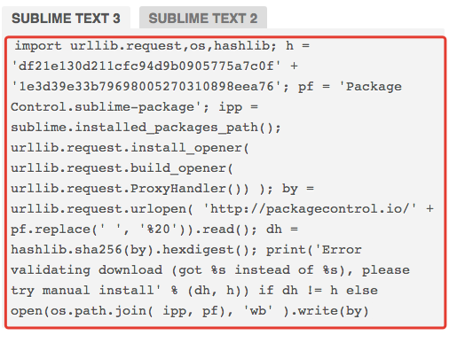
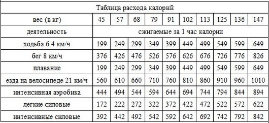
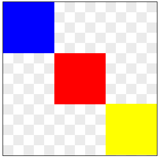
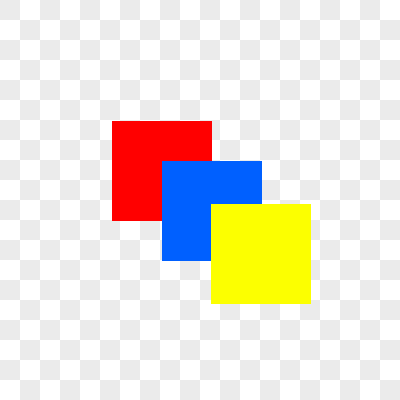

Уже давно никто не верстает в блокноте. Это глупо, потому что есть множество бесплатных программ для верстальщиков, которые очень сильно расширяют функционал и автоматизируют многие рутинные задачи.
есть 3 основных разряда текстовых редакторов:
Текстовые редакторы по типу Microsoft Word нам не подходят так как они имеют свой собственный формат файлов и не подходят для верстки.
В этом блоке мы с вами установим 3 текстовых редактора, нужные плагины для верстальщика и немного изучим их возможности.
Так же мы установим программу для быстрых скриншотов и познакомимся с github
Все обучающие видео можно смотреть в ускоренном воспроизведении без потери качества восприятия, но при этом сильно экономится время просмотра. Об этом в видео.
Brackets – хороший текстовый редактор от компании Adobe. У него есть свои плюсы и минусы.
К плюсам отнесу то, что он хорош для старта в веб-разработке. Так как в нем много всего работает уже из коробки. Подсветка выделенного фрагмента кода, автозаполнение путей, live Preview, и простота установки плагинов. Это отлично подходит для знакомства с версткой.
К минусам я отнесу то что он достаточно тормозной и иногда глючный и в нем удобно работать только в одном файле или на чистом css без препроцессоров.
Именно поэтому я рекомендую пользоваться этим редактором кода в первую и вторую неделю нашего курса.
Универсальные горячие клавиши: ctrl + N — создать новый файл, ctrl + S – сохранить файл.
Вызвать стили для элемента или выбор цвета — ctrl + E
скачать package control вики горячие клавиши
SublimeText3 является на данный момент моим любимым текстовым редактором. Но это чисто субьективное мнение. Вы должны сделать собственный выбор самостоятельно. Огромное количество разработчиков пользуются другими текстовыми редакторами.
SublimeText в отличие от brackets нуждается в первоначальной настройке для нормальной работы. В самом начале нужно установить package control - это плагин который позволяет устанавливать плагины.
Идем на официальный сайт package control и копируем там код

После этого открываем саблайм текст и открываем в нем консоль комбинацией клавиш ctrl + ~, вставляем в нее скопированный код и нажимаем enter. Дожидаемся пока плагин полностью установиться и перезапускаем sublime text.
Теперь вызываем package control с помощью горячих клавиш ctrl + shift + P и начинаем писать слово install. В поиске должно будет высветиться Package Control: Install Package. Кликаем по нему мышкой и у нас откроется установщик пакетов. Перове что нужно установить это Emmet. Для этого напишем его название в поиске и кликнем мышкой на найденный пакет, после чего пойдет установка эммета. Дальше подобным образом мы устанавливаем все нужные нам плагины.
Список обязательных плагинов:
Текстовый редактор Atom — это еще один пример отличного редактора кода для верстки. Это редактор от создателей Github.
Он отличается очень хорошо настраиваемым внешним видом, огромным количеством плагинов и хорошей и простой интеграцией с github
Скриншот – хороший способ по быстрому показать что-то или попросить помощи в определенном участке кода.
Есть различные программы для скриншотов. Короткое видео на эту тему.
emmet.io документация emmet статья на хабре полный список сокращений emmet
emmet – самый полезный плагин для веб-разработчика. Он позволяет сильно ускорить процесс разработки.
Работает он следующим образом: вы пишете сокращение и нажимаете клавишу tab и получаете в результате заданный кусок кода.
Например: пишем в редакторе h1, нажимаем tab и получаем <h1> <h1>
Скриншот – хороший способ по быстрому показать что-то или попросить помощи в определенном участке кода.
Есть различные программы для скриншотов. Короткое видео на эту тему.
Если вы хотите более детально изучить git то рекомендую вам пройти бесплатный курс от linda.com на русском языке ссылка на курс.
Для продолжения обучения пожалуйста обратитесь к преподавателю курса.
Создать файл index.html в папке site1 в любом месте на вашем компьютере. Создать, сохранить через текстовый редактор brackets.
Создать базовую разметку в файле index.html Кодировка должна быть utf-8, язык страницы русский, title — моя первая созданная web-страница. В теле документа напишите свою фамилию и имя.
Создать новый документ gallery.html
Добавить на страницу заголовок первого уровня — Галлерея. Добавить на страницу 4 изображения (изображения можете брать любые). У каждого изображения должен быть собсвтенный заголовок 3-го уровня. Ширина каждого изображения должна равняться 400px. Последнее изображение на странице должно быть ссылкой и вести на google.com
Создать таблицу расхода каллорий. Постараться максимально точно повторить структуру таблицы.
Для продолжения обучения пожалуйста обратитесь к преподавателю курса.
Установить node.js и browser-synk. Запустить любой ваш проект через browser-synk и попробовать редактировать файл, чтобы увидеть нормальную работу browser-synk.
команда для browser-synk
browser-sync start --server --files "css/*.css,html/*.html,*.*"
Задать свои цвета для всех состояний ссылок на странице. Цвет выбирайте самостоятельно.
Задать заголовкам и абзацам шрифты из безопасного списка которые вам больше нравяться. Заголовки одним шрифтом, абзацы другим.
Заменить в файле все жирные и курсивные начертания (задать их с помощью свойств css, а не html тегов).
Убрать подчеркивание у всех ссылок, выровнять все заголовки по центру, в третьем абзаце фразу "строчные элементы" сделать перечеркнутым текстом.
Сделать заголовки первого уровня и второй абзац буквами в верхнем регистре. В первом абзаце сделать расстояние между буквами 2px
Создать новую папку проекта и повторить все из видеоурока.
Установить и настроить автопрефиксер в sublimetext3 и опробовать его действие.
Создать новую папку проекта и повторить все из видеоурока (усложненная версия задания — создать сетку из 3-х и 6-ти блоков).
Повторить меню в уроке и сверстать свой вариант горизонтального меню. можно брать из любой страницы или любого сайта
Создать на странице блок с 3-мя элементами внутри:
Размер блока 300px/300px. размер элементов 100х100. Использовать абсолютное позиционирование. Фон блока или не трогать или задать это изображение:
Используя предыдущее задание и способ позиционирования absolute добейтесь следующего результа:
Размер серого квадратика на фоне 20рх
Создать свой вариант сниппета стартового файла. По ходу курса вы так же можете создавать другие сниппеты частоиспользуемых вами блоков кода.
Установить koala. Создать less файл, привязать его отслеживание и конвертирование в коалу.
Повторить код из видеоурока. Вставить свою фамилию. Фоновый цвет по желанию можете заенить на свой.
Сделайте форматирование таблицы с помощью css. цвет, фон, рамку, отступы можете варьировать на свой вкус.
Повторить пример из видеоурока. посмотреть пример скачать файлы